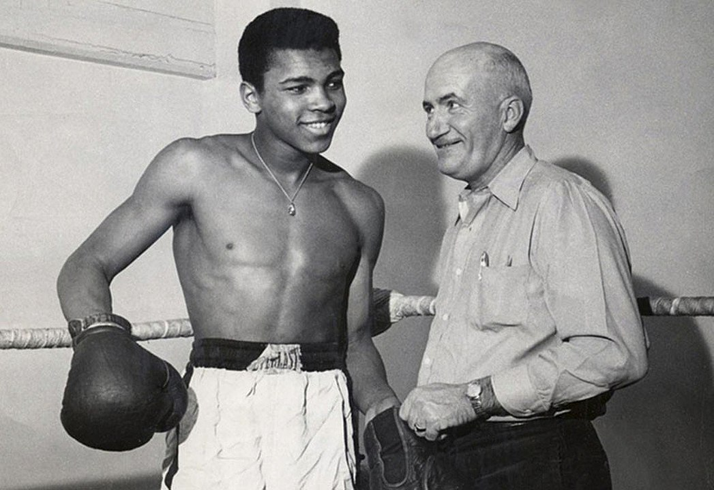
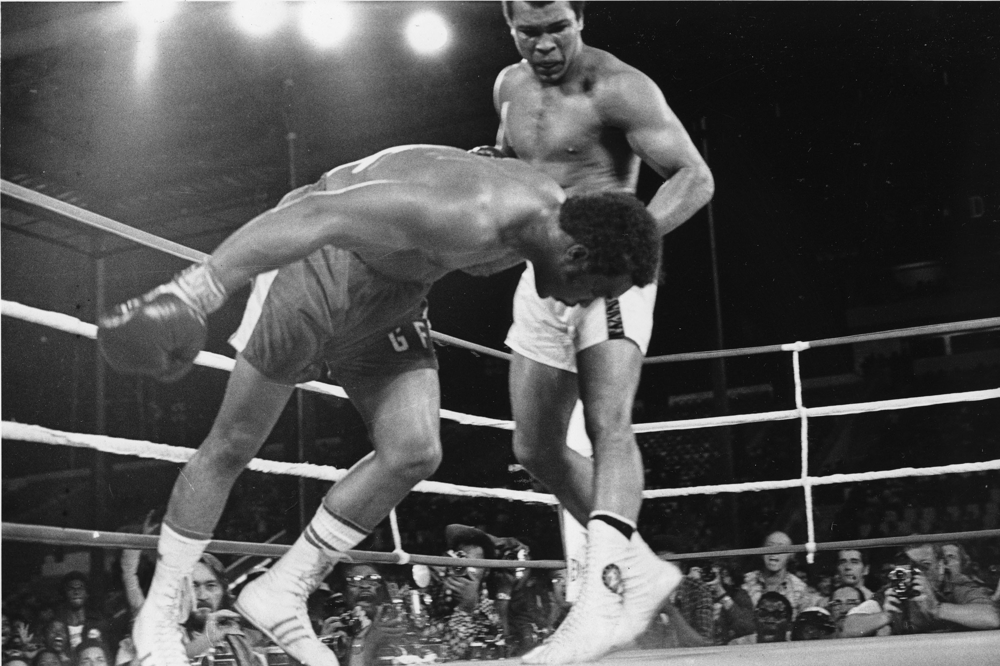
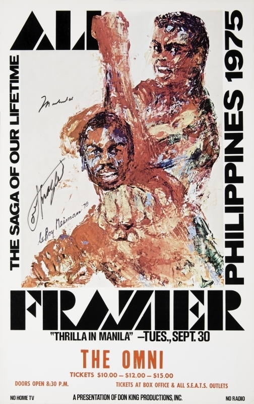
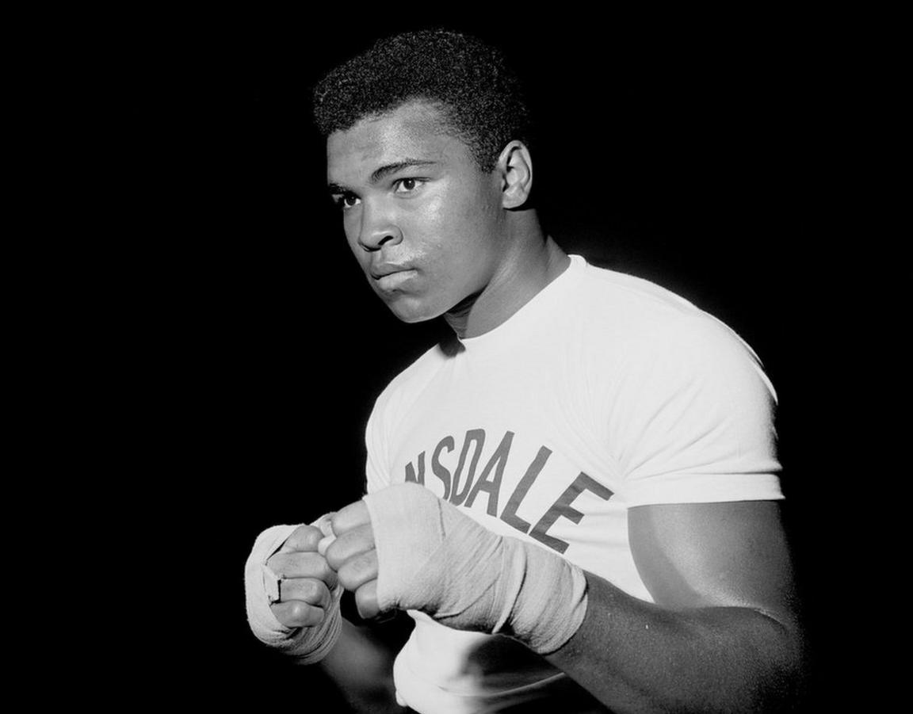

Muhammad Ali, born Cassius Clay, began his boxing journey at the age of 12 in Louisville, Kentucky. After his bicycle was stolen, he vowed to "whup" the thief, leading a police officer to suggest he learn how to fight. This marked the start of an incredible career. Ali quickly rose through the amateur ranks, winning a gold medal in the 1960 Rome Olympics. His professional debut in 1960 was a victorious start to what would become a legendary career.
One of Ali's most iconic fights took place in Zaire against George Foreman. Using his ingenious "rope-a-dope" strategy, Ali let Foreman tire himself out before delivering a knockout punch in the eighth round. This victory not only regained Ali the heavyweight title but also cemented his status as a cultural and sports icon.
The third and final bout between Ali and Joe Frazier was one of the most grueling matches in boxing history. In the sweltering heat of Manila, both fighters pushed their limits. Ali emerged victorious when Frazier's corner stopped the fight before the 15th round, calling it "the closest thing to dying" he had ever experienced.
Muhammad Ali's achievements are unparalleled. He was a three-time world heavyweight champion and is widely regarded as one of the greatest boxers of all time. Ali's impact extended beyond the ring; his charisma, activism, and courage made him a global figure. His fights against Sonny Liston, George Foreman, and Joe Frazier are legendary, showcasing his skill, intelligence, and resilience.
Ali faced numerous challenges throughout his life. In 1967, he was stripped of his heavyweight title and banned from boxing for refusing to serve in the Vietnam War, citing his religious beliefs and opposition to the conflict. This decision cost him years in the prime of his career, but he returned triumphantly in 1970. Later in life, Ali battled Parkinson's disease, becoming an advocate for those living with the condition and inspiring millions with his strength and optimism.
